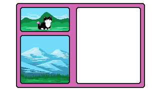

The glow is too enticing; you cannot leave it unexplored. You descend into the mountain, down to its very heart. The rest of the world gradually fades away, and you are left only with the faint light you'd seen at the entrance. At first, it is so faint that you can't pinpoint where it comes from. As you go deeper, you realize that small crystals are embedded in the rock of the passageway. They are the source of your light, and they only grow bigger and brighter the further you go. You realize they're getting louder, too. When the light becomes nearly blinding, you find yourself stepping out of the passageway. This deep in the earth, the crystals are so large, so bright, that they illuminate the cavern as far as the eye can see. Here, where the space is wide and open, their humming transforms into beautiful song. You listen to the crystals' lament. When their melody becomes too strong, too mournful, you decide to leave. Some things are best not heard by mortal ears. When you emerge, the outside world is dimmer than the caverns had been. You realize the day is running short when the first streaks of orange and pink begin to paint the sky. Your adventure is almost at an end. You know where to go.